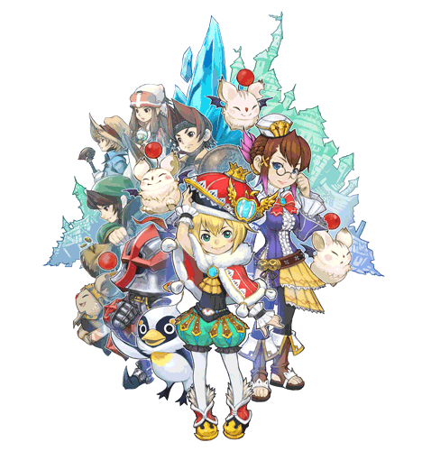

The story takes place in the world of FINAL FANTASY CRYSTAL CHRONICLES, some time after the last crystal caravan succeeded in lifting the deadly miasma from the land.
You take on the role of a young king whose kingdom was lost to the miasma, and its people dispersed. Your task is to rebuild your once prosperous kingdom in a new land using the power of "architek." The story and the mysteries of the crystal that bestowed architek upon you unfold as you make progress in the restoration of your realm.
With the help of your two most trusted aides, you face the daunting task of rebuilding a kingdom once lost in a new land full of promises. It's time to build, young king!
